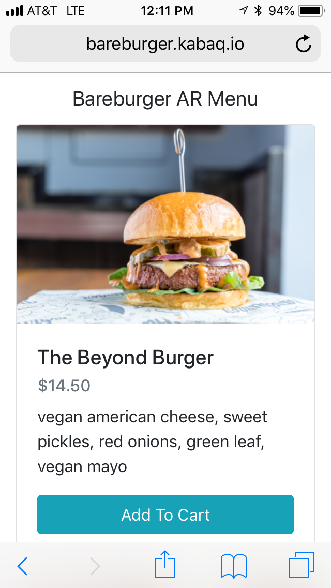
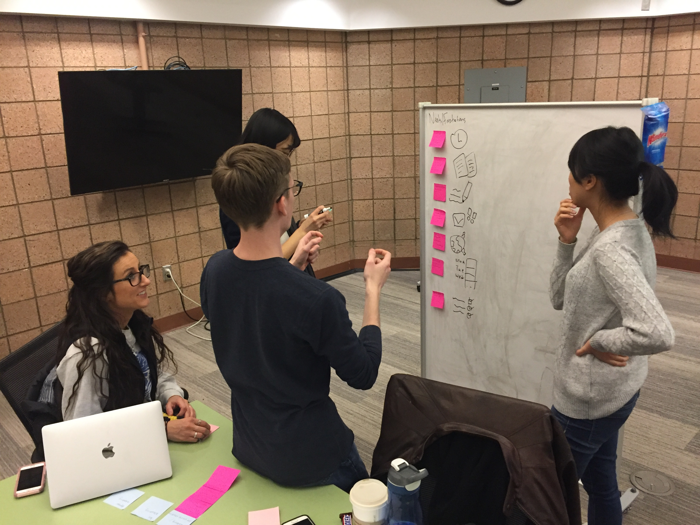

Problem Statement: With the ever evolving landscape of technology, there is increasing support for our upcoming technological ventures to take place in augmented and virtual realities. In order to keep up with these increasingly common technologies, I took an AR/VR Design course in order to develop the skills necessary to design in such spaces, as opposed to the primarily 2D ones my education has been focused on until now.
Lessons learned
Experiences and skills
SeeFood was a team project where we designed an AR application for visualizing food items from restaurant menus. The idea was to be able to look at a menu with your phone, select one of the items, and a 3D picture of the item would appear above the menu. This would allow restaurant-goers to see the food they're interested in before ordering to ensure that they're getting something they want. It would also be a great traveling tool, as users wouldn't have to read or speak the language the menu is written in.
^A mockup of the app in use.
This whiteboarding app was a VR tool we designed to allow users to collaborate more easily in a virtual space. The concept was simple, just have a whiteboard, some virtual sticky notes, and a tool to write with, and you and your collaborators now have a virtual platform to brainstorm together with!
^This was my prototype for the creation and movement of sticky notes on the board. Made in Unity.
Our final project of the semester, we had a design jam in class to create the "ultimate pesonal assistant". Our team decided to focus on an AR app to facilitate sharing and reviewing files and assigning tasks.
^Our brainstorming and some artifacts from the design jam.